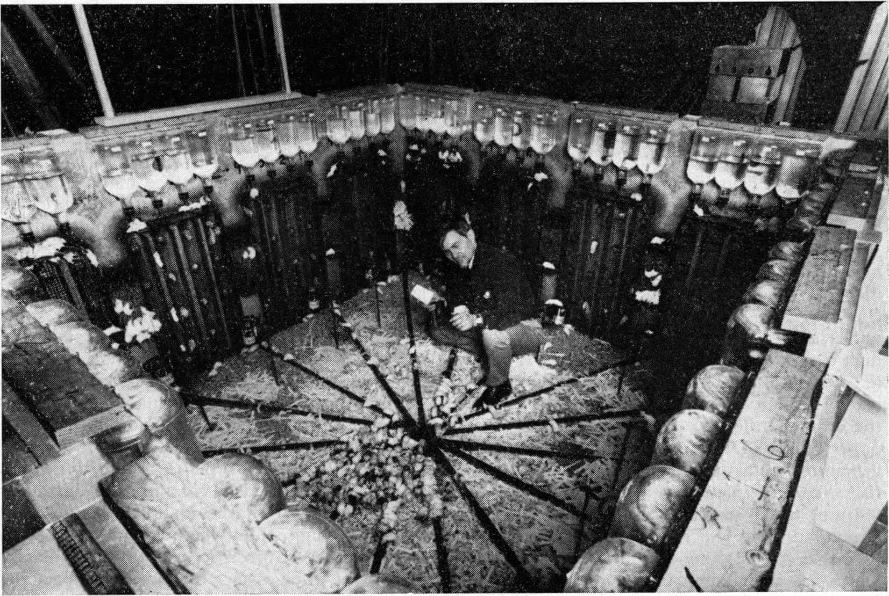

< < < Back
What Humans Can Learn From The Mice Utopia Experiment – Return Of Kings
In 1950, an American ethologist named John Calhoun created a series of experiments to test the effects of overpopulation on the behaviour of social animals. The animals which Calhoun chose for his experiments where mice (and later on rats). He chose rodents as these reproduce rapidly thus allowing him to observe the development of several generations of mice in a relatively short space of time.
Calhoun and his researchers found that in a space-limited/resource unlimited environment, the population of mice would explode; peak-out and then collapse to extinction. This test was replicated several times and it was found that these led to the same outcome each time. The reason for this phenomenon was found to derived from social decay which worsened with each generation. The social decay led to unrest in the environment, which in turn led to sub replacement fertility. It was concluded that nature has a limit in which social animals can interact.
John Calhoun’s experiments gained world-wide recognition and his expertise was sought after by government bodies such as NASA. They present a useful yet grim insight into what could be our own future, for no matter how many times Calhoun repeated the experiment, the results led to the same inevitable conclusion: extinction.
The Experiment
His team created a comfortable environment ideal for the mice. This was achieved by fitting a pen (box-shaped enclosure) with unlimited food and water. The room had space for up to 3000 mice. The room was closed off so that neither the mice could get out nor predators get in. By removing the risk of predation, the mice could grow in an environment free from external stress. The room was then compartmentalised into different units, this allowed Calhoun to identify how different social groupings formed.
Four pairs of mice were screened for diseases (four male and four female). Upon verifying that they were healthy they were introduced into the enclosure.
Calhoun observed the mice population over the course of the experiment. He noted down behavioural changes and population numbers. He found that there were four distinct phases of population change observed during the experiment. The first stage, named “Strive”, was a phase in which the mice explored and adjusted to their new habitat, set territories and created nests.
The second stage was named the ”exploit period”. During this stage the mice population exploded. Calhoun observed that some compartments became more populated than others, and therefore some units used more resources. It was also observed that some units started to become crowded.
The third phase was named the ”equilibrium phase”. During this phase, the mice population peaked at 2200 individuals, although there was space for 3000. During the third phase Calhoun observed the collapse of the mice civilisation. He noted that the new generations were inhibited since most space was already socially defined.

The mice showed different types of social dysfunctions. Some mice became violent. Males fought each other for acceptance, those that where defeated withdrew. Some males became repeated targets of attacks.
Calhoun had noted during his experiments:
“Many [female mice] were unable to carry pregnancy to full term, or to survive delivery of their litters if they did. An even greater number, after successfully giving birth, fell short in their maternal functions. Amongst the males the behaviour disturbances ranged from sexual deviation to cannibalism and from frenetic over-activity to a pathological withdrawal from which individuals would emerge to eat, drink and move about only when other members of the community were asleep. The social organisation of the animals showed equal disruption…”
[…]
“The common source of these disturbances became most dramatically apparent in the populations of our first series of three experiments, in which we observed the development of what we called a behavioural sink. The animals would crowd together in greatest number in one of the four interconnecting pens in which the colony was maintained. As many as 60 of the 80 mice in each experimental population would assemble in one pen during periods of feeding. Individual mice would rarely eat except in the company of other mice. As a result extreme population densities developed in the pen adopted for eating, leaving the others with sparse populations.”
[…]
“…In the experiments in which the behavioural sink developed, infant mortality ran as high as 96 percent among the most disoriented groups in the population.” – John Calhoun
Newer generations born in the now dysfunctional mouse utopia became withdrawn, spending their days grooming obsessively and dedicating their time solely to eating , drinking and sleeping. This generation, for all the emphasis they placed on grooming, would not reproduce. Moreover, these mice were noted to be unintelligent compared to previous generations.
“…the limit Calhoun imposed on his population [of mice] was space — and as the population grew, this became increasingly problematic. As the pens heaved with animals, one of his assistants described the rodent utopia as having become hell.”
The fourth phase was the decline. In this phase the population plummeted. The last mouse died 600 days after the experiment began.
What Can Humans Learn From Mice?
The limiting factor of Calhoun’s experiment’s was space. As time transpired, the mice passed on the negative behavioural attitudes to the next generation, and these, subsequently passed them on to the next generation, with the addition of new unsocial attitudes. What is it that makes space, and lack there off, such a decisive factor in the development of social animals? And what are the consequences for population condensation?
Notice how the evolution of the behaviours displayed by the mice, parallel those of the people of Easter Island, as explored by Quintus Curtius in his ROK article The Power Of Choice. The people of Easter Island are a historical example of a human version of the mice utopia experiment:
“When humans first arrived there about A.D 900, it [Easter Island] was densely forested, and was capable of sustaining numerous tribes and a relatively high population.”
The conditions of the islanders were similar to that of Calhoun’s mice. On an isolated island, with a lush environment, a group of humans settlers arrived on boats to Easter Island. The settlers could thrive with almost endless resources without natural predators nor external factors of stress.
With time, the island became over populated. Quintus explains what befell the Islanders:
“The islanders then began to compete with each other more and more fiercely for an ever-declining volume of natural resources; vendettas multiplied, intertribal warfare flared, and a pall of hostility and fear descended on the island. As the trees vanished, the islanders were unable to build boats to escape to other islands: they became trapped in their own hell, doomed to fight each other in perpetuity for the last crumbs that the barren land could offer. Eventually the islanders began to starve, and feed—literally—off each other. As wild meats became unavailable, and escape off the island became impossible, the natural consequences followed. Cannibalism stalked the island, animating its folklore and infecting its archaeological sites. Perhaps the islanders compensated for their misery by focusing more and more on the empty ritual of building and raising statutes, as their means of sustenance melted away.”
This is reminiscent of the ”behavioural sink” observed in the mouse utopia. It also resembles the abhorrent behaviours observed in Calhoun’s experiments resemble several shocking stories from recent times. Is it be possible that it’s social decay rather than a shortage of food that led the people of Easter Island to near extinction?
There are natural limitations on the degrees of social interaction we can manage on a daily basis, just like with the mice. In humans this is referred to as “Dunbar’s number“, and it has been observed to be true in social media sites.
Whilst it could be argued that this could not happen to humans; as we have large swathes of unpopulated land, it has to be noted that at the peak population, only half the colony space was being used. The mice had a tendency to congregate and overpopulate certain sectors of space, something reminiscent of modern day cities.
Modern Cases Of Behavioural Sinks In Humans
It is hard to compare the mouse utopia to the human world because, for obvious reasons, there is no human version of the mouse utopia experiment. Experiments are carried under controlled conditions to mitigate sources of error. However we can compare modern adverse trends in human society to the behavioural sink observed in the mouse utopia experiment. Below are some examples of behavioural sinks in Humans compared to those of the mice utopia.
Population Condensation
Case Study: Germany (Also applicable to: Spain, Japan.)
The first sign of trouble in the mice pen was the crowding observed in some of the units.
In Germany, the Spiegel reports of a growing problem of population condensation in it’s large cities and of ghost towns in rural areas. Rents are soaring in Munich and Hamburg while in other cities apartments stand abandoned.
Whilst this example is not a perfect representation of the mouse utopia, we can make some comparisons. The mice pen was compartmentalised. Similarly, Germany is divided into several regions all with ample resources. In Germany, some regions are becoming more crowded, this is driven by labour demand in some regions and lack of labour demand in others.
Prediction: I predict that as cities become crowded, some of the behaviours observed by Calhoun will become apparent. These will include social unrest and lower fertility rates.
Population condensation was a major cause of social unrest in the mouse utopia. Time will tell if this will be the case in Germany.
Depopulation (failure to achieve replacement fertility)
World wide phenomenon.
Case Study: Republic of Korea [South Korea], Japan
The main correlation between the mouse utopia experiment and our times is depopulation.
Depopulation led to the extinction of the mice. It is fascinating yet terrifying to think that without the hardships of life, a species cannot survive. If we think about this from a human perspective, we see that our struggle for survival unites us as a species. Without hardship our life’s become pointless and shallow.
If we look at South Korea’s fertility rate per woman, which stands at 1.24, we can predict that this nation of 50 million will peak out by 2017. From there the population is expected to decrease to decrease to 42 Million by 2050.
The source of this decline is lack of jobs and thus lack of income needed to rear children. Like in many other nations, the job ladder is stuck as older people retire later in life. South Korea, like Japan, had a booming job’s market which guaranteed lifetime employment. Sadly, this is no longer the case. The job’s from the cities attracted many away from the country side and created a population concentration in cities such as Seoul.
Depopulation presents our species with an ever-growing problem since sub replacement fertility is becoming more prevalent in the developed world.
If we look at Japan, we see that Japan now faces a precipitous depopulation. Depopulation is estimated to drive Japan’s population to 87 million, down from 127 million by 2050. In economic terms it would be catastrophic as Japan’s has an advance welfare state like that of the United Kingdom and depends on having a larger tax base than a retiree base. The problem is getting so out of hand in Japan that the Japanese government is even considering immigration (a big no-no over there).
Sub replacement fertility is also being noted in the Republic of Korea, Spain, Germany, China, Russia, US, UK, Denmark, Sweden and Norway.
Depopulation is likely to be an effect of the social breakdown and not a cause.
Senseless Aggression
Word wide phenomenon.
Case Study: Easter Island.
Aggression is an obvious aspect in both the mice utopia and the East Island case. It is also easily comparable to our society in present day. Whilst violence has always existed amongst our species, this had always been attributed to a range of factors such as poverty or inter-tribal warfare (aggression due to lack or resources) and not as a factor of population condensation (aggression despite of abundant resources).
The first signs of trouble in the mice utopia were male mice fighting for acceptance. This appears to have led a spiral of other societal problems.
“…there where three times as young mice aspiring to enter social groups as there were vacancies in socially established groups…”
Aggression is the cause of the societal breakdown. What was the cause of the aggression? As observed, a lack of space, both physically and socially, which sets into motion a series of events that led to the outcome of extinction.
Breakdown Of Gender Roles
Developed world phenomenon.
Case Study: USA, Japan
At ROK, we place a large importance on gender roles. Looking at this subject from a perspective of another species may give us some further insight on the topic. We have observed that depopulation is an effect, so what is the cause? Perhaps there is more than one cause. The behavioural sink observed in the mouse utopia showed several abnormal social behaviours.
In the male mice, a limited space and a boom in population caused the males to fight more to be accepted. Since not all mice can be alpha males, the losers withdrew. With excess males fighting for dominance, older males gave up, leaving the females to fend for the family. These would then become increasingly aggressive and some even began attacking their own offspring.
Calhoun noted that as time progressed “…mothers fell short of maternal expectations”. In recent years there have been an increasing amount of cases [1], [2], [3], [4] of child neglect and abuse by human mothers that have made it to national headlines. It is not hard to speculate that there are many more we have not heard. In Australia, police have released data that attribute half of the nation’s infanticides to their mothers.
Since these are the more notorious cases which the media publishes, the less extreme cases go unnoticed, under reported or unreported in the media (in the last few decades there have been a string of stories in the media, which when examined as a whole tells us that women are starting to lose their natural instincts for nurture). We know that women in developed nations are suppressing maternal instincts, either intrinsically or extrinsically. It is also becoming more common for women to seek a sex-fueled lifestyle, something that was also observed in the mouse utopia.
“…the mice became more promiscuous…mice would roam around attacking others or mounting them irrespective of gender…”
“…phase C, the incidence of conception in females declined and the resorption in foetuses increased. Maternal behaviour was disrupted. Some mothers in desperate searches for quieter areas abandoned young that fell on the way…” – Tragedy in Mouse Utopia, Dr.J.R Vallentine
As the behaviour in the pen deteriorated, females would abandon their offspring leaving them to fend for themselves. With no parents around to teach them how to be well adjusted mice,
“…prematurely rejected, first by their fathers, then by their mothers, and then by established groups in the community, the young grew up without knowing how to behave, personally or socially as mice…” – Tragedy in Mouse Utopia, Dr.J.R Vallentine
Gender roles are vital in a social species, without that the break down of these lead to sub replacement fertility, depopulation, and finally, extinction.
Withdrawal
Case Study: Japan
“Individuals would only emerge to eat and sleep when the rest were asleep.” When I read this, the first thing that came to my mind was the Hikikomori. It’s a term used to refer to a reclusive adolescent who is too introverted to function in society. These youth are so socially inept that they shut themselves indoors and only venture out at night to stock up on groceries. This is a phenomenon that has been occurring for 20 years but that is only recently coming to light in Japan.
The Hikikomori are estimated to number a million. Something that has alarmed the Japanese government who have been unable to tackle an issue they do not fully understand. In Japan, an entire generation of young Japanese have been born into a society in where all space is already socially defined just like in the mice utopia were “the new generations were inhibited since most space was socially defined”.
However this trend is not exclusive to Japan. Japan is however a very close approximation to a mice utopia experiment for humans just like Easter island. Under stress, these boys (and men) have been impaired by a stressed and dysfunctional society. Withdrawal is a cause for depopulation and the effect of an over stressed society which is in turn caused by the behavioural sink.
The Beautiful Ones
Case Study: Japan
There is another social ill in Japan that is comparable to Calhoun’s mice. These are the grass eaters (Soshoku kei Danshi ) of Japan. The term, “grass eater”, refers to males who have no interests in seeking relationships with the opposite sex. The media and the manosphere has confused these guys with whatever pre-conceptions they may have had. For example, the BBC documentary “No Sex please, we are Japanese“, explores the phenomenon with bias and poor journalism. So to ensure we don’t fall for the same pre-conceptions allow me to reiterate that the grass eaters are men who have no interest in pursuing relationships with the opposite sex. They are not homosexuals, asexual’s, otaku nor Hikikomori.
The difference between grass eaters and the Hikikomori is that the Soshoku kei Danshi are withdrawing from relationships and the Hikikomori are withdrawing from society all together. Grass eaters are not asexual, the prefer the vast array of porn available to them. Many grass eaters, although not all, are metro-sexual. These are guys who spend a lot of time and money into personal grooming. Once again this is not applicable to all grass eaters.
Some grass eaters show resemblance to the “Beautiful ones”, spending their time “…[obsessively] grooming, eating and sleeping….[and]…not reproducing”. The correlation appears to be that individuals are not conforming to a stressed societal model and are opting out of relationships and a male gender role. The grass eaters have become so numerous that is has pushed some Japanese girls to initiate the courtship. This phenomenon is most pronounced in Japan but is applicable to other developed nations.
In the Republic of Korea, 10% of men wear make up. In other developed nations, the “beautiful ones” are the vapid and shallow celebrity and beautify obsessed youth. It is possible that grass eaters could become a cause of depopulation and that is caused by the behavioural sink.
Conclusion
The mice utopia experiment presents us with a stark vision of our present and our future. As time progresses we will see more evidence that we are heading for a decline in population which is largely driven by social decay.
Through history we have developed an anthropocentric world view. This is folly. Humans are animals—highly advanced animals, yet animals nonetheless. Regardless of what we may think of ourselves, or how we may try to dissociate ourselves from the rest of the animal kingdom, the rules of nature that apply to mice often apply to us. Not learning or accepting the results of these experiments can only be detrimental for us as a species.
Social animals appear to be regulated by intrinsic behavioural factors. The question is if there is a nature kill switch for a species that has no predators. Calhoun concluded that the stress from social interaction caused the disturbances in behaviour seen in his experiments. If we truly stand apart from the rest of the animal kingdom, we ought to be able to avoid the same pitfalls. What is certain is that unless humans collectively apply some soul-searching, we will fall for the mouse trap.
Read More: The Power Of Choice


{kind=link}